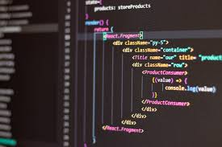

Discovering My Passions
Skills
I am really good at designing web pages, making sure they look great and work smoothly.1 I enjoy choosing the right colors, fonts, and layouts to make websites easy to use.2 I can write clean and efficient code to bring my designs to life.3 I know how to use HTML, CSS, and JavaScript to build websites from scratch.4 When it comes to databases, I am skilled in SQL and can create, update, and manage data easily.5 I also know how to use R Studio for data analysis, which helps in organizing and understanding large amounts of information.6 Python is another programming language I use to create simple scripts and automate tasks.7 I am also experienced in C#, which allows me to develop applications and even create basic games.8 Debugging code is something I am good at, and I enjoy fixing errors to make sure everything runs perfectly.9 I always try to write code that is not only functional but also easy to read and maintain.10 I stay updated with the latest trends in web design to keep improving my skills.11 I love exploring new tools and software that can make my coding process faster and more efficient.12 I can also work with APIs to connect websites to external services like payment systems or maps.13 Teamwork is important to me, and I can collaborate with others on coding projects using GitHub.14 I have experience with frameworks like Bootstrap and React, which help in creating responsive web designs.15 I also like improving the speed and performance of websites by optimizing code.16 Learning never stops for me, and I always look for ways to improve my skills through online courses and tutorials.17 I enjoy working on personal projects to apply what I learn in real-world scenarios.18 Building something from scratch and seeing it work perfectly gives me a great sense of achievement.19 My goal is to keep growing as a developer and create projects that people will find useful and enjoyable.20

Hobbies
Playing video games is one of my favorite hobbies, and I enjoy trying out different types of games.1 I love competitive games where I can test my skills against other players.2 Story-driven games also interest me because they allow me to experience new adventures and stories.3 Multiplayer games are fun because I get to team up with friends and strategize to win matches.4 Sometimes, I just play casual games to relax and take a break from studying.5 Music is another big part of my life, and I listen to different genres depending on my mood.6 I like listening to upbeat music when I need motivation and slow songs when I want to relax.7 Playing volleyball is something I enjoy because it keeps me active and improves my teamwork skills.8 I love the excitement of spiking the ball and trying to score points for my team.9 Another sport I play is badminton, which helps me improve my reflexes and agility.10 The fast pace of the game makes it exciting, and I enjoy the challenge of hitting the shuttlecock accurately.11 When I have free time, I like watching eSports tournaments to learn new strategies from professional players.12 Sometimes, I also watch game development videos to understand how games are created.13 Exploring new music artists and discovering fresh tracks is something I do often.14 I also like playing rhythm-based games because they combine my love for music and gaming.15 Watching movies and series is another way I relax after a long day.16 I enjoy both action-packed movies and ones with deep, emotional stories.17 Hanging out with friends and talking about our favorite games or tech trends is always fun.18 Trying out new apps and testing their features is something I enjoy doing.19 Overall, my hobbies keep me entertained, active, and always learning something new.20

Interests
I am very interested in technology and how it continues to evolve.1 Artificial intelligence fascinates me, and I love reading about its latest advancements.2 Cybersecurity is another area that interests me because of its importance in protecting data.3 I enjoy learning about ethical hacking and how security systems can be improved.4 Cloud computing is something I want to explore more since it's changing how businesses operate.5 Game development interests me because I love creating interactive experiences.6 I am also interested in machine learning and how it helps in automating tasks.7 Web development is something I follow closely since I want to create innovative websites.8 I love exploring different programming languages and understanding their unique uses.9 Space exploration fascinates me, especially the idea of colonizing other planets.10 Virtual reality and augmented reality are also areas I want to learn more about.11 I like reading about how blockchain technology is changing industries.12 I am interested in robotics and how they are being integrated into daily life.13 Smart home automation is something I find really cool and innovative.14 I love watching tech reviews to stay updated with the latest gadgets.15 I also follow tech conferences to learn about new breakthroughs in science and technology.16 Exploring different software and tools is something I do in my free time.17 I am always interested in how technology can improve efficiency in various fields.18 I like following startup companies and seeing how they introduce new ideas.19 Overall, my interests push me to keep learning and stay curious about the future of technology.20